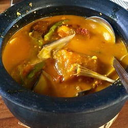
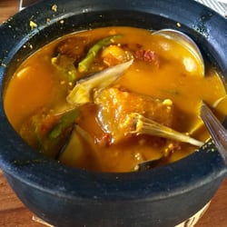

Location:Dalampasigan Compound, R. Martinez St.Nasugbu, Batangas |
Kainan sa Dalampasigan |
Branches:Nasugbu |
|
|
Open everyday from 7:00AM - 9:00PM |
|
Contact Info:Call them at 0927-7563162 |
|
Website:Like their facebook page. |

|

|

|
 

|
About:Kainan sa Dalampasigan which started as a small snack bar for pelota-playing buddies of the Limjoco’s and the Lucases, developed by serving lunch meals for its customers, and bloomed as a full grown restaurant after a wedding was held. A cooking legacy that was passed by Teodora “Doray” C. Limjoco to her daughter Normita “Baby” Lucas and to her daughter’s children who preserved the original house recipes they are serving for more than 35 years & can never be found anywhere else in the country. Lola Doray used to help in supervising the food being prepared inside the kitchen, now the graceful lady retired. Despite of this, she serves as an inspiration to Tita Baby and her children to continue providing excellent food to their customers. Kainan sa Dalampasigan is open for reservation of parties such as birthdays, debuts, anniversaries, and weddings. Experience heaven here on Earth with our huge and airy restaurant filled with exotic plants and wildflowers, waterfalls and fountains, and wooden chairs & tables, that can handle up to 1,500 guests, while being entertained by very accommodating staff who stayed with Dalampasigan for more than 15 years. Enjoy good food and feel the warmth of home, because every guest is a family here at Kainan sa Dalampasigan. |
Reviews:"My Tanigue Steak was very yummy and my friend's Lechon was also great! I just wish I came here in the afternoon when there is light out. It was really dark in the evening. I took off 1 star because they did not have what I originally wanted."
"Napakabait po ng mga staff's masarap ang food lalo na yung binalot. I love it! Napaka memorable po ng place. At ang cake ko na leche flan with matching pink candle."
"The food really tastes good! You won't mind the price cause the food and experience in the place is more than the price itself. The place was so relaxing. We travelled all the way from Cavite to visit and eat here."
"We dined here 3 times already and the food is SUPERB plus the ambiance WOW!!!! as if your dining in an ancestral house... I love the place"
"My ultimate comfort food is here. My best buddies are here. My heart is here."
|
Menu:Ampalaya w/ Beef/Shrimp.---------------------- P230 Broccoli w/ Beef.--------------------------------- P250 Vegetables w/ Squid in Oyster sauce.----------- P250 Adobong Kangkong.------------------------------ P240 Crispu Canton.----------------------------------- P280 Sotangho Guisado.------------------------------- P210 Palabok.------------------------------------------ P200 Pancit Canton.------------------------------------ 190 Garlic Rice.--------------------------------------- P40 Ham and Cheese.-------------------------------- P80 |
|
Best Seller:Ampalaya w/ Beef/Shrimp. Broccoli w/ Beef Vegetables w/ Squid in Oyster sauce. |